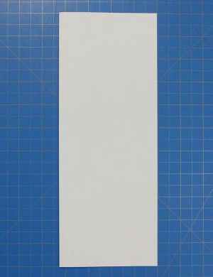
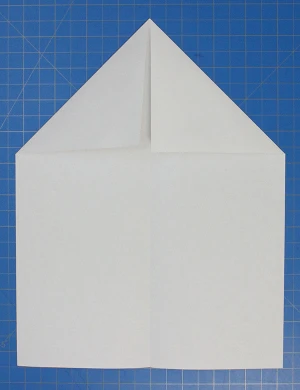
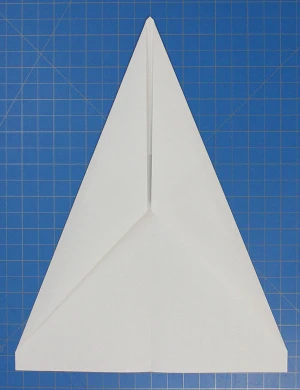
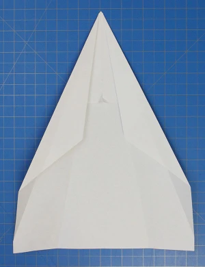
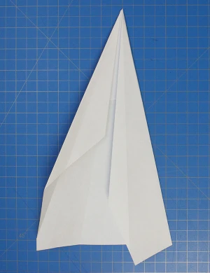

1步骤 1
Fold the sheet in half.

Fold the sheet in half.

Open the sheet back up and fold the upper corners to the center.

Repeat the last step with the both upper edges.

Repeat again by folding the corners in

Unfold everything back to step 2 and then fold the corners to the diagonal crease that you just made.

Fold along this same crease again so the two halves cross over a bit in the middle.